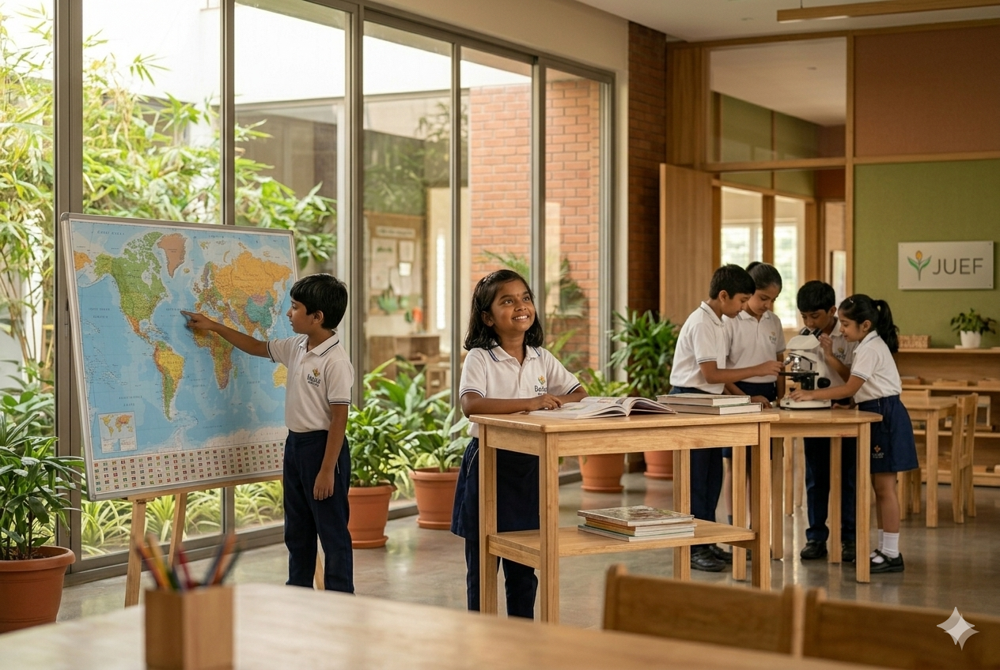

Our Vision
Future-Ready Citizens
To nurture future-ready citizens who are spiritually aware, morally grounded, globally competent, and deeply connected to the values of compassion, truth, and non-violence.
About the Foundation
The Jain Universal Education Foundation is a registered non-profit organisation dedicated to building a complete education system for the AI age — rooted in 2,500 years of Shraman wisdom.
Our Vision
To nurture future-ready citizens who are spiritually aware, morally grounded, globally competent, and deeply connected to the values of compassion, truth, and non-violence.
Our Mission
At Jain Universal Education Foundation, our mission is to build an educational ecosystem rooted in the timeless wisdom of Jain philosophy and values. This system is designed not only to provide high-quality, holistic education to children of the Jain community, but also to nurture a strong sense of identity, character, and ethical grounding in every learner.
Through this transformative approach, we envision the creation of meaningful opportunities for employment, entrepreneurship, and self-reliance within the community. Our goal is to establish Jain education as a globally recognized model, while fostering unity and driving the integrated, sustainable growth of Jain society across the world.

Our Program
Shraman Education is a transformative learning model inspired by the Jain way of inquiry, reflection, and growth. A complete education system spanning Nursery to Class XII, built on Six Domains, Four Mind Tools, and Three Schools — Kalash, Padam, and Shikhar.
From sensory activation in the early years to PhD-level mentorship in senior school, Shraman Education creates humans that AI cannot replace.
Explore the Framework →The Founder
A renowned educationist, economist, and technocrat whose lifelong mission has been to redefine the purpose of learning. With decades of global experience, he envisioned an education system rooted in ancient Indian wisdom — especially the Jain way of learning — that could empower future generations with values, intelligence, and purpose.
Founder of Jain Universal Education Foundation, Mr. Jain pioneered the Shraman Education model. His work bridges timeless spiritual insight with cutting-edge pedagogy, creating a new path to cultivate ethical, conscious, and globally competent leaders.
The Foundation
The Jain Universal Education Foundation (JUEF) is a registered non-profit organisation established with the singular purpose of reimagining education for a generation that will live alongside artificial intelligence. JUEF operates as a charitable foundation under Section 8 of the Companies Act, 2013, and is recognised under Section 80G of the Income Tax Act — ensuring that every contribution directly advances its educational mission.
The Foundation was established on the conviction that India's children deserve an education system that develops the whole human being — not just academic performance, but character, judgment, grit, compassion, and purpose. Drawing from 2,500 years of Shraman wisdom, JUEF has created an independent K–12 learning framework that is modern in design, rigorous in application, and deeply rooted in values.
Our Values
We honor ancient wisdom while embracing innovation and research to craft forward-looking educational models that can scale and inspire.
We operate with complete honesty, ethical responsibility, and transparency in all our actions and decisions.
We hold ourselves accountable to our students, supporters, and the community — ensuring that every action is purposeful and impactful.
We believe in building systems that are not just impactful, but also ecologically, socially, and economically sustainable for future generations.

Join the Movement
At Jain Universal Education Foundation, we believe in building with purpose, values, and vision. Through Shraman Education, we invite individuals who are ready to contribute to meaningful change.